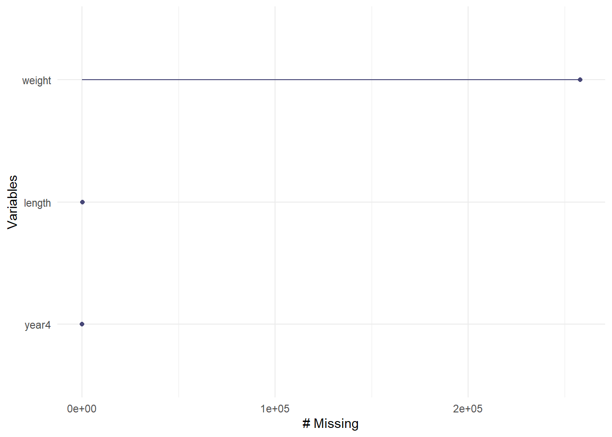
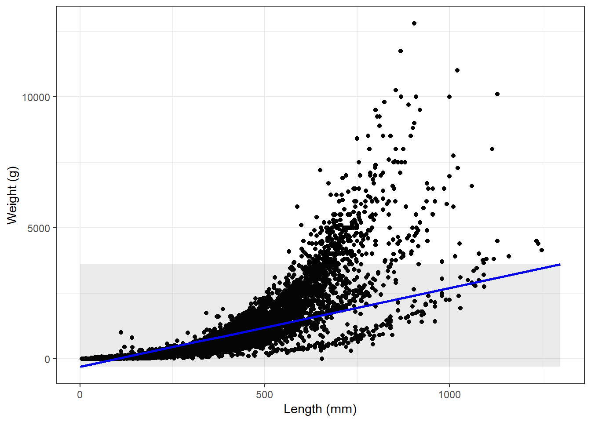

How does fish length predict fish weightfor trout perch (across all sample years)?
Problem 1-
Null Hypothesis: There is no statistically significant relationship between the lengths of fish and their weight for trout perch.
Alternative Hypothesis:There is a statistically significant relationship between the lengths of fish and their weight for trout perch.
This is the code to clean up the data provided by the data creators:
# Package ID: knb-lter-ntl.6.34 Cataloging System:https://pasta.edirepository.org.# Data set title: North Temperate Lakes LTER: Fish Lengths and Weights 1981 - current.# Data set creator: John Magnuson - University of Wisconsin-Madison # Data set creator: Stephen Carpenter - University of Wisconsin-Madison # Data set creator: Emily Stanley - University of Wisconsin-Madison # Metadata Provider: NTL Information Manager - University of Wisconsin-Madison # Contact: - NTL LTER - ntl.infomgr@gmail.com# Stylesheet v2.11 for metadata conversion into program: John H. Porter, Univ. Virginia, jporter@virginia.edu inUrl1 <-"https://pasta.lternet.edu/package/data/eml/knb-lter-ntl/6/34/7dddb5e70250d2e24537e34272316220"infile1 <-tempfile()try(download.file(inUrl1,infile1,method="curl"))if (is.na(file.size(infile1))) download.file(inUrl1,infile1,method="auto") dt1 <-read.csv(infile1,header=F ,skip=1 ,sep="," ,quot='"' , col.names=c("lakeid", "year4", "sampledate", "gearid", "spname", "sampletype", "depth", "rep", "indid", "length", "weight", "sex", "fishpart", "spseq", "flag" ), check.names=TRUE)unlink(infile1)# Fix any interval or ratio columns mistakenly read in as nominal and nominal columns read as numeric or dates read as stringsif (class(dt1$lakeid)!="factor") dt1$lakeid<-as.factor(dt1$lakeid)if (class(dt1$year4)=="factor") dt1$year4 <-as.numeric(levels(dt1$year4))[as.integer(dt1$year4) ] if (class(dt1$year4)=="character") dt1$year4 <-as.numeric(dt1$year4) # attempting to convert dt1$sampledate dateTime string to R date structure (date or POSIXct) tmpDateFormat<-"%Y-%m-%d"tmp1sampledate<-as.Date(dt1$sampledate,format=tmpDateFormat)# Keep the new dates only if they all converted correctlyif(length(tmp1sampledate) ==length(tmp1sampledate[!is.na(tmp1sampledate)])){dt1$sampledate <- tmp1sampledate } else {print("Date conversion failed for dt1$sampledate. Please inspect the data and do the date conversion yourself.")} rm(tmpDateFormat,tmp1sampledate) if (class(dt1$gearid)!="factor") dt1$gearid<-as.factor(dt1$gearid)if (class(dt1$spname)!="factor") dt1$spname<-as.factor(dt1$spname)if (class(dt1$sampletype)!="factor") dt1$sampletype<-as.factor(dt1$sampletype)if (class(dt1$depth)=="factor") dt1$depth <-as.numeric(levels(dt1$depth))[as.integer(dt1$depth) ] if (class(dt1$depth)=="character") dt1$depth <-as.numeric(dt1$depth)if (class(dt1$rep)=="factor") dt1$rep <-as.numeric(levels(dt1$rep))[as.integer(dt1$rep) ] if (class(dt1$rep)=="character") dt1$rep <-as.numeric(dt1$rep)if (class(dt1$indid)!="factor") dt1$indid<-as.factor(dt1$indid)if (class(dt1$length)=="factor") dt1$length <-as.numeric(levels(dt1$length))[as.integer(dt1$length) ] if (class(dt1$length)=="character") dt1$length <-as.numeric(dt1$length)if (class(dt1$weight)=="factor") dt1$weight <-as.numeric(levels(dt1$weight))[as.integer(dt1$weight) ] if (class(dt1$weight)=="character") dt1$weight <-as.numeric(dt1$weight)if (class(dt1$sex)!="factor") dt1$sex<-as.factor(dt1$sex)if (class(dt1$fishpart)!="factor") dt1$fishpart<-as.factor(dt1$fishpart)if (class(dt1$spseq)!="factor") dt1$spseq<-as.factor(dt1$spseq)if (class(dt1$flag)!="factor") dt1$flag<-as.factor(dt1$flag)# Convert Missing Values to NA for non-dates# Here is the structure of the input data frame:str(dt1)
lakeid year4 sampledate gearid spname sampletype depth rep indid length
1 AL 1981 1981-08-04 BSEINE BLACKCRAPPIE -1 4 321M1 42
2 AL 1981 1981-08-04 BSEINE BLACKCRAPPIE -1 4 321M2 41
3 AL 1981 1981-08-04 BSEINE BLACKCRAPPIE -1 4 321M3 46
4 AL 1981 1981-08-04 BSEINE BLACKCRAPPIE -1 4 321M4 26
5 AL 1981 1981-08-04 BSEINE BLACKCRAPPIE -1 4 321M5 21
6 AL 1981 1981-08-04 BSEINE BLACKCRAPPIE -1 4 321R1 240
weight sex fishpart spseq flag
1 NA 3211010-100
2 NA 3211010-100
3 NA 3211010-100
4 NA K 3211010-100
5 NA K 3211010-100
6 210 S 3211010-100
#installing packageslibrary(tidyverse) # general usage
── Attaching core tidyverse packages ──────────────────────── tidyverse 2.0.0 ──
✔ dplyr 1.1.1 ✔ readr 2.1.4
✔ forcats 1.0.0 ✔ stringr 1.5.0
✔ ggplot2 3.4.2 ✔ tibble 3.2.1
✔ lubridate 1.9.2 ✔ tidyr 1.3.0
✔ purrr 1.0.1
── Conflicts ────────────────────────────────────────── tidyverse_conflicts() ──
✖ dplyr::filter() masks stats::filter()
✖ dplyr::lag() masks stats::lag()
ℹ Use the conflicted package (<http://conflicted.r-lib.org/>) to force all conflicts to become errors
library(here) # organization
here() starts at C:/Spring 23/ES 193DS/Homework4
library(plotly) # interactive plots
Attaching package: 'plotly'
The following object is masked from 'package:ggplot2':
last_plot
The following object is masked from 'package:stats':
filter
The following object is masked from 'package:graphics':
layout
library(skimr) # quick glimpses at datalibrary(naniar) # visualizing missing data
Attaching package: 'naniar'
The following object is masked from 'package:skimr':
n_complete
The following objects are masked from 'package:plotly':
highlight, style
The following object is masked from 'package:purrr':
compose
library(ggeffects)library(car)
Loading required package: carData
Attaching package: 'car'
The following object is masked from 'package:dplyr':
recode
The following object is masked from 'package:purrr':
some
#2 code)
#creating filtered data framelibrary(dplyr)# Specify the columns you want to keeplength_wt_yr <-c("year4", "length", "weight")# Filter the data table to include only the specified columnsfiltered_data <- fishlengths %>%select(all_of(length_wt_yr))view(filtered_data)
#visuaization of the missing data for the filtered datasetgg_miss_var(filtered_data)

#2 answer) a) The missing data is relevant to our hypothesis because there are several missing data points for weight which could alter the results. However, the 500+ data points we can reference should be good enough to test our hypothesis.
#3 code)
#removing rows with NA datacomplete_data<- filtered_data[complete.cases(filtered_data),]view(complete_data)
#exploring the relationship visuallyggplot(data = complete_data, aes(x = length, y = weight)) +geom_point()
RvF- The residuals are not evenly and randomly distributed, so the assumption of homoscedasticity is violated.
S-L: These residuals are not evenly and randomly distributed as well, so the assumption of homoscedasticity is violated.
Q-Q: These residuals are not normally distribute because they do not follow the straight trend line.
RvL- These residuals show that outliers largely affect the data and that the assumption of homoscedasticity is violated.
We can infer that the residuals are not linear and that the data is heteroscedastic so the linear regression is not a good predictor of values.
#6 code)
#summary of linear regressionsummary(lmlength_mass)
Call:
lm(formula = weight ~ length, data = complete_data)
Residuals:
Min 1Q Median 3Q Max
-1661.7 -142.1 -6.5 118.8 10385.8
Coefficients:
Estimate Std. Error t value Pr(>|t|)
(Intercept) -309.55373 1.60785 -192.5 <2e-16 ***
length 3.00965 0.00814 369.7 <2e-16 ***
---
Signif. codes: 0 '***' 0.001 '**' 0.01 '*' 0.05 '.' 0.1 ' ' 1
Residual standard error: 303 on 91088 degrees of freedom
Multiple R-squared: 0.6001, Adjusted R-squared: 0.6001
F-statistic: 1.367e+05 on 1 and 91088 DF, p-value: < 2.2e-16
#this summary shows a strong relationship between predictor and response. high r squared indicates good fit. intercept and length coefficients statistically significant
#creating table to summarize anova tablemodel_summary<-summary(lmlength_mass)#storing anova table as objectmodel_squares<-anova(lmlength_mass)model_squares
Analysis of Variance Table
Response: weight
Df Sum Sq Mean Sq F value Pr(>F)
length 1 1.2549e+10 1.2549e+10 136700 < 2.2e-16 ***
Residuals 91088 8.3620e+09 9.1802e+04
---
Signif. codes: 0 '***' 0.001 '**' 0.01 '*' 0.05 '.' 0.1 ' ' 1
model_squares_table<-tidy(model_squares) %>%# round the sum of squares and mean squares columns mutate(across(sumsq:meansq, ~round(.x, digits =5))) %>%# round the F-statistic mutate(statistic =round(statistic, digits =1)) %>%# replace the small p value with < 0.001mutate(p.value =case_when( p.value <0.001~"< 0.001" )) %>%# rename length to be more meaningfulmutate(term =case_when( term =="length"~"Length (mm)", term =="weight"~"Weight (g)",TRUE~ term )) %>%# make the data frame a flextable objectflextable() %>%# change the header labels to be meaningfulset_header_labels(df ="Degrees of Freedom", sumsq ="Sum of squares",meansq ="Mean squares",statistic ="F-statistic",p.value ="p-value")model_squares_table
term
Degrees of Freedom
Sum of squares
Mean squares
F-statistic
p-value
Length (mm)
1
12,549,293,413
12,549,293,413.06
136,700.2
< 0.001
Residuals
91,088
8,362,023,669
91,801.59
#8 answer)
The information of the anova table suggests similar information to the summary table. It shows a strong correlation between the predictor and response, however the low p-value suggests that the null hypothesis should be rejected
#9 answer)
The linear regression revealed a significant direct relationship between the weight of the plants and their length (coefficient estimate= 3.00965, t(91088) = 369.7, p < 2e-16). The model accounted for a substantial amount of the variability in weight (R² = 0.6001), which was supported by the highly significant F-statistic (F(1, 91088) = 1.367e+05. These findings suggest that length is a strong predictor of weight, but there is a high variance in the data.
#10 code)
# extract model predictions using ggpredictpredictions <-ggpredict(lmlength_mass, terms ="length")predictions
plot_predictions <-ggplot(data = complete_data, aes(x = length, y = weight)) +# first plot the underlying data from maples_datageom_point() +# then plot the predictionsgeom_line(data = predictions, aes(x = x, y = predicted), color ="blue", linewidth =1) +# then plot the 95% confidence interval from ggpredictgeom_ribbon(data = predictions, aes(x = x, y = predicted, ymin =-312, ymax =3621), alpha =0.1) +# theme and meaningful labelstheme_bw() +labs(x ="Length (mm)",y ="Weight (g)")plot_predictions

#the CI was not showing on the graph so I manually input the data which does not display them quite correctly but gives an idea of the CI
This plot shows the predicted weight value based on the length value with the blue line. The filtered data is plotted on this to show how it compares to the predicted values. The grey area is the confidence interval and the mean of the values is expected to fall within this.